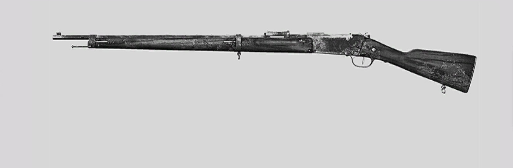
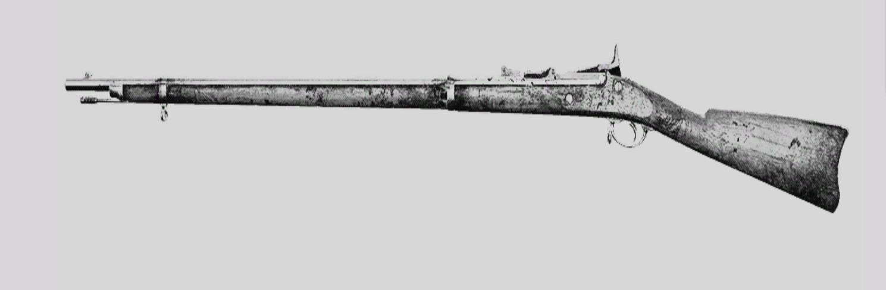
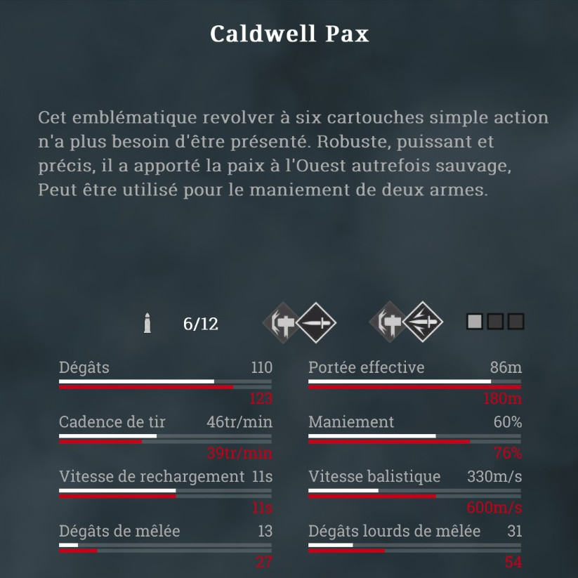

Les différents types d'armes
Les armes à munitions longues
- 

Les armes à munitions moyennes
- 
- 
Les armes à munitions compactes
Contenu à venir plus tard
Les armes à munitions spéciales
Contenu à venir plus tard
Les armes de mélée
Contenu à venir plus tard